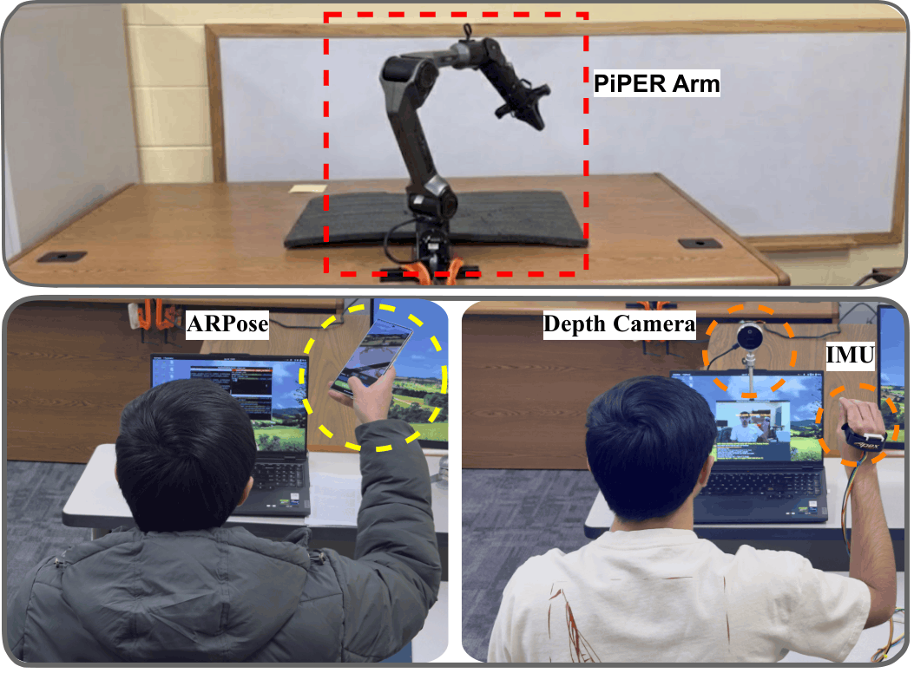
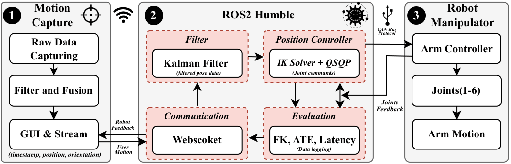

The Evaluation Bottleneck: Validating Augmented Reality (AR) systems requires precise, repeatable ground-truth motion. While human testing is essential, natural biomechanical variability (tremors and fatigue) makes it impossible for users to perfectly replicate motions across multiple trials. This inconsistency creates a debugging dilemma: when an AR tracking algorithm glitches, is it a software flaw or just an erratic human movement?
The ARBot Solution: We introduce ARBot, a real-time teleoperation framework that translates unpredictable human motion into highly repeatable robotic execution. By acting as a deterministic physical proxy, ARBot completely isolates algorithm performance from human inconsistency.
Our open-source platform features:
User intent is captured via natural 6-DOF tracking (ARPose App) or high-precision Depth Camera + IMU sensors.
A ROS2 backend applies Kalman filtering and a QP Controller to remove human tremor and solve inverse kinematics.
The PIPER arm faithfully replays the smoothed motion with ~5mm median accuracy via the CAN Bus protocol.

Hardware Setup: PIPER Arm, ARPose, Depth Camera, and IMU.

System Architecture: Raw capture data is filtered and solved via ROS2 (Kalman Filter + QSQP) before robot execution.
The ARPose app leverages Google's ARCore for natural 6-DOF tracking, offering an intuitive, plug-and-play user experience. ARPose is much easier to deploy and better captures the flexible, unconstrained hand motions typical of everyday AR users.
The CV+IMU setup combines an Intel RealSense L515 LiDAR Depth Camera with a wearable inertial sensor (MPU-9250) to capture highly stable, precise wrist movements. High-frequency 200Hz IMU data acts as a safety net during transient visual tracking drops.
Watch the trajectories below playing in real-time. The top row shows 3 raw human trajectories characterized by natural tremor and drift (averaging ~75mm of variance). The bottom row demonstrates ARBot's 5 robotic executions specifically tasked with mimicking the exact intended path of the first human trajectory (Human trial 1). By reducing human Inter-Trial Variability (ITV) by up to 10.2x, ARBot achieves an unprecedented ~5.0 mm median Absolute Trajectory Error (ATE) compared to the source motion. All plots share the identical absolute scale.
ARBot is designed as a modular toolkit rather than a monolithic project. Depending on your laboratory's available hardware, here are four strategic ways the community can leverage our pipelines and datasets for advanced research:
Skip physical hardware setup entirely. Inject our open-source dataset of 132 trajectories directly into PyTorch, MATLAB, or Gazebo as raw motion inputs.
Featuring distinct topological patterns (squares, circles, "S" shapes), this dataset provides robust, varied kinematic behaviors (sharp corners, continuous curves) to rigorously train self-supervised intent-prediction networks or validate novel smoothing algorithms purely in simulation.
Utilize ARBot's execution arm in autonomous "repeatable mode" to push AR headsets and vision sensors to their absolute algorithmic limits.
By mounting tracking hardware directly to the end-effector, researchers can repeatedly execute zero-drift trajectories at varying speeds or under dynamic lighting conditions. This perfectly isolates algorithmic failure (SLAM/VIO drift) from human error during stress tests.
Deploy our multimodal capture interfaces (ARPose or CV+IMU) entirely independently of the robotic manipulator for robust human-subject studies.
By logging micro-level spatial data (position, orientation, timestamp) during complex 3D tasks, HCI researchers can quantitatively assess Extended Reality (XR) interface designs, effectively isolating biomechanical fatigue and jitter from cognitive workload constraints.
Leverage the complete end-to-end hardware and ROS2 software stack to prototype high-stakes, real-world remote manipulation (e.g., medical robotics).
Researchers can deliberately inject artificial network delays into the teleoperation pipeline to stress-test the custom QSQP controller, pioneering new mathematical methods for proactive obstacle avoidance and real-time human intent translation under severe latency.
@inproceedings{10.1145/3793853.3799807,
author = {Chhajed, Harsh and Guo, Tian},
title = {ARBot: A High-Fidelity Robotic Manipulator Teleoperation Framework for Human-Centered Augmented Reality Evaluation},
year = {2026},
isbn = {9798400724817},
publisher = {Association for Computing Machinery},
address = {New York, NY, USA},
url = {https://doi.org/10.1145/3793853.3799807},
doi = {10.1145/3793853.3799807},
abstract = {Validating Augmented Reality (AR) tracking and interaction models requires precise, repeatable ground-truth motion. However, human users cannot reliably perform consistent motion due to biome-chanical variability. Robotic manipulators are promising to act as human motion proxies if they can mimic human movements. In this work, we design and implement ARBot, a real-time teleoperation platform that can effectively capture natural human motion and accurately replay the movements via robotic manipulators. ARBot includes two capture models: stable wrist motion capture via a custom CV and IMU pipeline, and natural 6-DOF control via a mobile application. We design a proactively-safe QP controller to ensure smooth, jitter-free execution of the robotic manipulator, enabling it to function as a high-fidelity record and replay physical proxy. We open-source ARBot and release a benchmark dataset of 132 human and synthetic trajectories captured using ARBot to support controllable and scalable AR evaluation.},
booktitle = {Proceedings of the ACM Multimedia Systems Conference 2026},
pages = {409–415},
numpages = {7},
keywords = {Augmented Reality, Robot Teleoperation, Human-Robot Interaction},
location = {
},
series = {MMSys '26}
}